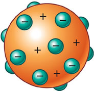
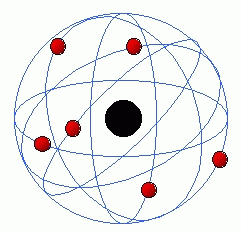
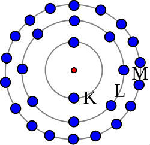

A constituição da matéria é motivo de estudos desde a antiguidade, alguns pensadores como Leucipo e Demócrito formularam a ideia de haver um limite para a pequenez das partículas. Mais tarde um pouco cientistas da epóca começaram pesquisas que formularam modelos atômicos que são aspectos estruturais dos atômos que foram apresentados na tentativa de compreender melhor ele e sua composição.
Modelo Atômico de Dalton
John Dalton foi um químico, metereologista e físico inglês, nascido na Inglaterra, no dia 6 de setembro de 1766 e faleceu em 1844. O modelo atômico de Dalton apresenta as substâncias como sendo constituídas de pequenas partículas chamadas átomos.
O modelo atômico proposto por Dalton, que foi comparado com uma bola de bilhar, tem como principais características dizer que o átomo é:
- esférico
- maciço
- indivisível
- indestrutível
- incriavel
Mas ainda, em seus postulados, o cientista afirmava que os átomos de diferentes elementos tem propriedades distintas, mas átomos do mesmo elemento são exatamente iguais. Ainda ressalta que nas alterações químicas o átomo participa como um todo e que não se alteram quando formam compostos químicos.
Modelo Atômico de Thomson
Joseph John Thomson(1856-1940), nascido na Inglaterra, foi o primeiro modelo de estrutura atômica a indicar a divisivilidade do átomo. De acordo com o cientista o átomo era formado por elétrons presos a uma esfera onde havia carga positiva. Esse modelo ficou conhecido como "pudim com passas", onde o pudim é o átomo com carga positiva e a os eletróns, partícula subátomica, eram as passas que ficavam incrustadas.
Thomson que a carga do átomo era nula, porque o átomo era composto por cargas positivas e negativas que se anulavam pelo fato de o números de ambas as cargas ser igual. Esse cientista ficou conhecido como "pai do elétron".
Modelo Atômico de Rutherford
O modelo do físico Ernest Rutherford(1871-1937) sugere que o átomo apresenta o aspecto de uma sistema planetário. Por esse motivo ele é chamado de modelo planetário ou modelo de átomo nucleado. Nesse modelo, os elétrons giram em torno do núcleo (formado por prótons e nêutrons), de forma semelhante aos planetas que giram à volta do Sol. Esse modelo representa uma revolução nessa matéria e torno-se a base da teoria atômica.
O experimento de Rutherford
Durante a epóca desse experimento Rutherford estava estudando a trajetória de partículas e a interação entre a radiação alfa e os materiais. Com isso ele detectou que havia uma limitação no modelo atômico apresentado por Thomson.
O experimento é demonstrado da seguinte forma, temos uma amostra de um elemento radioativo polônio dentro de um bloco de chumbo. A radiação alfa (α) que saía do polônio passava por um pequeno orifício do bloco de chumbo e ia em direção a uma finíssima lâmina de ouro. Atrás dessa lâmina de ouro havia um anteparo fluorescente, pois foi recoberto de sulfeto de zinco, que mostraria uma luminosidade onde as partículas alfa incidissem.
O resultado do experimento foi:
- A maioria das partículas continuou sua trajetória atravessando a lâmina de ouro.
- Poucas partículas atravessaram a lâmina e desviaram-se de sua trajetória.
- Poucas partículas foram refletidas, não atravessando a lâmina.
Rutherford concluiu através do experimento que:
- O fato de a grande maioria das partículas alfa atravessar a lâmina indica que a maior parte do átomo é na verdade espaços vazios.
- O fato de poucas partículas atravessarem a lâmina de ouro terem sofrido um desvio na sua trajetória, isso indica que elas se aproximavam de uma região do átomo que tivesse a mesma carga que elas, isto é, carga positiva, por isso repelidas.
- As poucas partículas que foram rebatidas pela lâmina de ouro indicavam que o átomo possui uma região maciça que impedia essa passagem, com carga igual, isto é, positiva. As partículas refletidas bateriam de frente com essa região.
Modelo de Bohr
Niels Henry David Bohr, dinamarquês especialista em física atômica, nasceu em 1885 e faceleu em 1962. O modelo atômico de bohr apresenta o aspecto de órbidas onde existem elétrons e, no seu centro um pequeno núcleo, como na imagem. Niels Bohr deu continuidade ao trabalho desenvolvido com Rutherford. Ele coseguiu preencher a lacuna que existia na teoria atômica que fora proposta por Rutherford. Dessa forma, como foi uma continuidade de uma teoria, o modelo de Bohr também pode ser chamado de modelo de Rutherford-Bohr.
Bohr promoveu experimentos que mostravam essas falhas e propunham um novo modelo. Na sua teoria se o modelo de Rutherford estivesse em todo correto, aos elétrons serem acelerados, eles emitiriam ondas eletromagnéticas. E na sequência essas partículas perderiam energia e colidiriam com o núcleo atômico. Mas o que acontece, é que o elétron emite energia. E quanto maior a energia mais longe ele fica do núcleo do átomo.
Os postulados de Bohr foram:
- Quantização da energia atômica (cada elétron apresenta uma quantidade específica de energia).
- Os elétrons se movem em uma órbita, as quais são chamadas de “estados estacionários”. Ao absorver energia, o elétron salta para uma órbita mais distante do núcleo.
- Quando absorve energia, o nível de energia do elétron aumenta saltando para uma camada mais externa. Por outro lado, ela diminui quando o elétron emite energia.
- Os níveis de energia, ou camadas eletrônicas, acomodam um número determinado de elétrons e são designados pelas letras: K, L, M, N, O, P, Q.